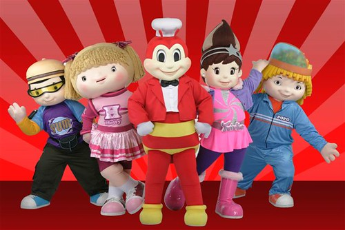

The home of joyful dining and beloved flavors since 1975.
Founded by Dr. Tony Tan Caktiong, Jollibee began as a modest ice cream parlor before transforming into the country's favorite fast-food giant. Today, Jollibee represents not just a meal, but a cherished part of Filipino culture, spreading happiness with every serving. Explore our menu of delicious burgers, spaghetti, Chickenjoy, and more, as we continue to bring a taste of joy to families in the Philippines and around the world.
Join us in celebrating the joy of eating at Jollibee, where eating is a heartwarming experience for everyone.
Sa Jollibee, Bida ang Saya
The Jollibee Group has launched a global sustainability program, Joy for Tomorrow, reaffirming its commitment to environmentally friendly and socially responsible business practices. This initiative is built around three core pillars: Food, People, and Planet, which are further divided into 10 key focus areas. These areas cover a range of important issues, including ensuring safe and nutritious food, promoting employee well-being, supporting local farmers, engaging with communities, upholding ethical governance, reducing waste and pollution, and conserving energy and water resources. Each focus area has specific objectives and initiatives that align with the United Nations' Sustainable Development Goals.
Simplying these into the following:
Jollibee's Vision: To be one of the Top 5 Restaurant Companies in the World
Jollibee's Mission: To serve great-tasting food, bringing the joy of eating to everyone
Don't forget to say hi to Jollibee and the crew!
They were inspired by a concept referred to by creators and scholars as "Filipino Optimism." This embodies a set of fundamental values often linked with Filipinos, including being centered on family, politeness, hospitality, gratitude, a sense of shame, adaptability, loyalty, hard work, and a resignation often expressed as the "Bahala na" attitude.
